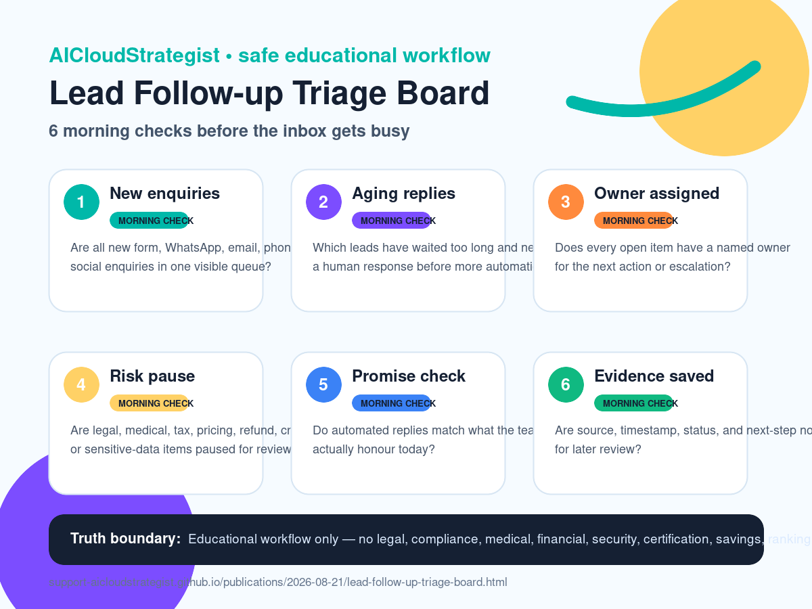

Morning publication · Lead follow-up operations
Lead Follow-up Triage Board: 6 morning checks before the inbox gets busy
A safe educational board for owners and teams to review new enquiries, missed replies, and automation exceptions before customer promises drift.

Practical checklist
- New enquiries: Are all new form, WhatsApp, email, phone, and social enquiries in one visible queue?
- Aging replies: Which leads have waited too long and need a human response before more automation runs?
- Owner assigned: Does every open item have a named owner for the next action or escalation?
- Risk pause: Are legal, medical, tax, pricing, refund, credential, OTP, or sensitive-data items paused for review?
- Promise check: Do automated replies match what the team can actually honour today?
- Evidence saved: Are source, timestamp, status, and next-step notes captured for later review?
Use this board before connecting more tools or sending automated replies. A useful morning review keeps the queue, owner, risk boundary, customer promise, and evidence visible.
Educational workflow only — no legal, compliance, medical, financial, security, certification, savings, ranking, revenue, booking, or guaranteed-performance advice.